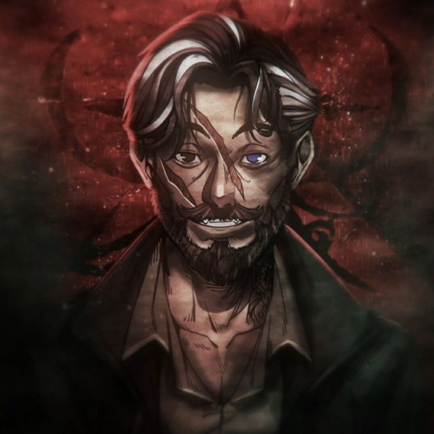
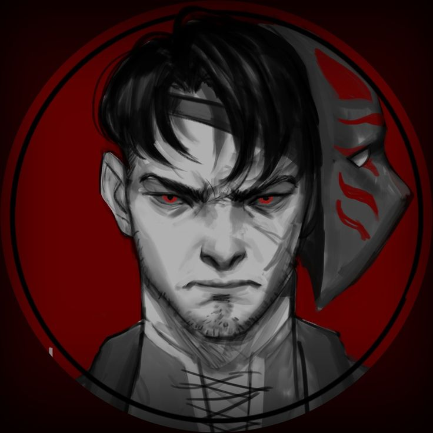
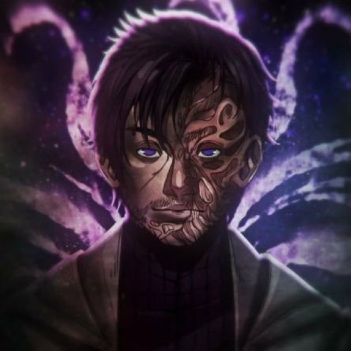

-
Arthur Cervero,o Gaudério Abutre
Um jovem guerreiro, membro de uma gangue de motoqueiros que acabou se juntanfo a Ordo Realitas, perdeu muitos amigos no caminho e hoje possui a posição de lider da equipe.
ATK/ 3200 DEF/ 2300 -
Joui Jouki, o Guerreiro
Um grade guerreiro, que perdeu quem considerava família e foi consumido pela vinganca e forca a colocar uma mascara para esconder sua dor. Seu fim foi tragico, mas seu legado é eterno.
ATK/ 4500 DEF/ 3500 -
Kaiser, o Anjo da Noite
Um hacker, que perdeu seu pai em sua primeira missão, sendo forçado a enfrentar a realidade da morte e a dor. No fim seu unico objetivo era ser um horei e proteger a todos, assim como seu amigo. Seu destino foi justamente por estar rodeado de pessoas.
ATK/ 2600 DEF/ 2800